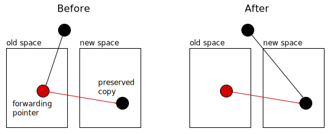
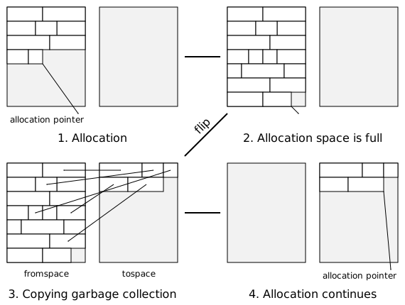
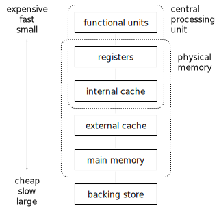

Memory Management Glossary: S¶
A | B | C | D | E | F | G | H | I | J | K | L | M | N | O | P | Q | R | S | T | U | V | W | X | Y | Z
- sbrk
sbrk is a Unix library function that adjusts the limit of the data segment; this limit is known as the break.
sbrk returns the previous value of the break, so sbrk(0) is a common idiom for getting the current value.
Note that, if you use brk, you probably can’t safely use sbrk as well, because it may store the last value of the break in a private variable.
- scalar data type
A scalar data type is a type that is representable in a single dimension and whose objects have only magnitude as value.
Examples of scalar data types include: integers, floating-point numbers, enumerations, and characters.
Relevance to memory management
The objects of a scalar data type are leaf objects. Scalar data types with bounded magnitude can be represented compactly using value objects.
Historical note
Because compact representation solves many memory management issues, many older programming languages only offered bounded scalar data types. For example, the int type in C is defined to have a magnitude that can be represented by a word.
See also
vector data type, algebraic data type, value object, leaf object.
- scan
The examination of an object or an area of memory(2) to find references, typically as part of tracing.
Scanning examines memory that has been decided to be non-garbage, to find references to objects that have been condemned.
In the MPS
See Scanning.
- scan method
In the MPS
A function that examines a block of memory to find references and indicate them to the MPS. A scan method forms part of an object format. See mps_fmt_scan_t.
- scan state
In the MPS
A scan state represents the state of the current scan. The MPS passes a scan state to the scan method of an object format when it needs to scan for references within a region of memory. Scan states belong to the type mps_ss_t.
- scavenging garbage collection
- SDRAM
Synchronous Dynamic Random Access Memory. A high performance variant of DRAM.
SDRAM uses an external clock signal to synchronize its data input and output. It is capable of achieving very high data rates for linear access to memory.
- segmentation violation
A segmentation violation occurs when an attempt is made to access memory(2) whose address is well-formed, but to which access cannot be granted. This might be due to either a protection fault or an invalid page fault.
The term is sometimes used more loosely as a synonym for any memory access error, including a bus error.
Similar terms
- segmented addressing
In segmented addressing, addresses are in two parts: a segment identifier and an offset into that segment.
Each segment has a base address and a limit. If the offset is greater than the limit, the address is invalid (see segmentation violation). Otherwise, the offset is added to the segment’s base address, giving the unsegmented address. Segment identifiers may be implicit; for instance, they may be obtained from a current segment register.
Segmentation may be layered on top of virtual memory, in which case the unsegmented address is a virtual address, or not, in which case it is a physical address.
Note that, in segmented architectures, you can have a two-dimensional address space.
Segments are a feature of some processor architectures and operating systems. This description does not cover all possible variations on segmentation.
Historical note
Segment terminology may be used on unsegmented systems for historical reasons. For instance, Unix processes have text segments, even when running on an unsegmented system.
Opposite term
- segregated allocation cache
In the MPS
A mechanism for adding a segregated free list to a manual pool class. See Segregated allocation caches.
- segregated fit
One of the segregated free list class of allocation mechanisms. There is an array of free lists, each holding free blocks of a particular range of sizes. The allocator identifies the appropriate free list and allocates from it (often using a sequential fit mechanism such as first fit). If this fails, a larger block is taken from another list and split.
The details of the mechanism depend on the division of sizes between free lists. See exact segregated fit and strict segregated fit.
This implements a good fit allocation policy.
- segregated free list
segregated free-list A class of allocation mechanism which divides the free list into several subsets, according to the size of the free blocks. A freed or coalesced block is placed on the appropriate list. An allocation request is serviced from the appropriate list.
This class of mechanism implements a good fit or best fit policy.
Variations within this class include simple segregated storage, segregated fit, and buddy systems.
In the MPS
Segregated allocation caches are a general mechanism for adding a segregated free list to any manually managed pool. See Segregated allocation caches.
- semi-conservative garbage collection
Also known as
mostly-precise garbage collection, mostly-exact garbage collection.
A variant of conservative garbage collection which deals with exact references as well as ambiguous references.
For example, references from the root set might be ambiguous, but objects on the heap might be fully described and precisely scanned.
See also
- semi-space
When an area of memory(2) is divided into two parts for the purposes of copying garbage collection, the parts are known as semi-spaces, or sometimes just spaces.
Each semi-space is a contiguous area of memory. Semi-spaces are usually used for two space collection, but can be used for generational collection.
The semi-space where objects reside at the start of the collection is known as the fromspace; the tospace is where objects will reside, and where new objects will be allocated, when the collection is complete.
See also
- semi-space collector
See
- sequential fit
A class of allocation mechanisms that maintain the free list as a single linear list of free blocks (a free block chain). Sequential fit mechanisms include first fit and next fit.
To quote Wilson et al. (1995):
The list is often doubly-linked and/or circularly linked. Typically, sequential fit algorithms use Knuth’s boundary tag technique, and a doubly-linked list to make coalescing simple and fast. […] In considering sequential fits, it is probably most important to keep strategy and policy issues in mind. The classic linear-list implementations may not scale well to large heaps, in terms of time costs; as the number of free blocks grows the time to search the list may become unacceptable. More efficient and scalable techniques are available, using totally or partially ordered trees, or segregated fits.See also
- sequential store buffer
Also known as
SSB.
A sequential store buffer is a technique for dividing the cost of a write barrier by remembering which objects are modified and updating remembered sets (and so on) at a later stage.
This turns out to be extremely efficient on pipelined architectures with branch prediction.
- Memory locations are shared if they are in the range of multiple address spaces.
- simple object
In the PostScript language, simple objects are the unboxed objects.
Unlike a composite object, a simple object contains all its data in the object itself.
Similar term
Opposite term
- simple segregated storage
A segregated free list allocation mechanism which divides memory(1) into pages or other areas and only allocates objects of a single size, or small range of sizes, within each area. This makes allocation fast and avoids headers, but may lead to high external fragmentation, as unused parts of areas cannot be reused for other object sizes.
- size
In the MPS
The term size in the documentation always refers to a size that is measured in bytes(1). The term count is used for the number of elements in an array.
- size class
In the MPS
A segregated allocation cache maintains a reserve of free blocks in a set of sizes: each such size is known as a size class. When creating a segregated allocation cache by calling mps_sac_create(), the client program describes the desired set of size classes by passing an array of structures of type mps_sac_class_s. See Segregated allocation caches.
- skip method
In the MPS
A format method that returns the address of the “next object” in a block of formatted objects. See mps_fmt_skip_t.
- smart pointer
A smart pointer is an instance of a C++ class that encapsulates a pointer and performs reference counting.
By overloading certain operators it is possible for the class to present the illusion of being a pointer, so that operator\*, operator-\>, etc. can be used as normal. Reference counting allows the objects that are referred to using the smart pointer class to have their memory(1) automatically reclaimed when they are no longer referenced. It is a common technique used when trying to solve memory management problems in C++ applications.
However, reference counting is not always an appropriate memory management technique and smart pointers can be hard to implement properly in C++. A tracing garbage collector might be worth considering.
- snap-out
Also known as
transport snap-out.
In a copying collector, when there is a reference to an object that was condemned, but has been transported, snap-out is the adjustment of that reference to point to the preserved copy.
Typically the first transport leaves a forwarding pointer that enables the snap-out.
Snap-out.
See also
- snapshot at the beginning
Snapshot-at-the-beginning algorithms for tracing, incremental GC note changes made by the mutator to the graph of objects and update the collector(2) state to make it trace relevant edges that the mutator deletes.
In order for the collector to miss a reachable object, the following two conditions need to hold at some point during tracing:
- The mutator stores a reference to a white object into a black object.
- All paths from any gray objects to that white object are destroyed.
Snapshot-at-the-beginning algorithms ensure the second condition cannot occur, by causing the collector to process any reference that the mutator overwrites and that might be part of such a path.
They are so called because they keep track of references that existed at the beginning of the collection cycle. Note that this does not mean all modifications need to be seen by the collector, only those needed to complete tracing without missing a reachable object (see Pirinen (1998) for details), nor does it mean that it won’t trace some references created during the collection.
Historical note
This distinction between incremental update and snapshot at the beginning was first introduced for write-barrier algorithms, but it applies to any type of tracing algorithm.
Opposite term
See also
- soft reference
In Java terminology, soft reference is used to mean a reference encapsulated in a reference object of class SoftReference.
Soft references form one of three kinds of weak reference(1) in Java. They are handy for building caches(3) that are automatically flushed when memory is low.
See also
- softly reachable
In Java, an object is softly reachable if it is not strongly reachable and there is a path from the roots to it that contains at least one soft reference but no weak(2) or phantom references.
When the Java collector(1) determines that an object is softly reachable, it has the option of clearing the soft references involved, which will usually allow the object to be recycled. The idea is that they will only be cleared if the process is running short of memory(2). If it is done, all soft references involved are cleared, so that the object is no longer softly reachable, and any affected reference objects which are registered with a queue are enqueued.
See also
- space leak
See
- spare commit limit
In the MPS
The spare commit limit is a limit on the spare committed memory that the MPS will obtain from the operating system. It can be retrieved by calling mps_arena_spare_commit_limit() and changed by calling mps_arena_spare_commit_limit_set().
- spare committed memory
In the MPS
Memory which is not in use by any pool and not otherwise in use for internal MPS data structures, but which remains committed (mapped to RAM by the operating system). It is used by the arena to (attempt to) avoid calling the operating system to repeatedly map and unmap areas of virtual memory as the amount of memory in use goes up and down. It is subject to the spare commit limit. The total spare committed memory can be retrieved by calling mps_arena_spare_committed().
- spaghetti stack
See
- splat
In the MPS
To overwrite a weak reference(1) with a null pointer, when the MPS has determined that there are no remaining strong references to the block referred to. See Weak references.
- split
To divide a free block into two smaller free blocks in the process of satisfying an allocation request.
Deciding when to split a block is an important aspect of an allocation policy.
Opposite term
See also
- SRAM
See
- SSB
- stack
A stack is a LIFO (last in, first out) collection: objects may be pushed onto the stack, and popped off it in reverse order of pushing.
When people say “the stack”, they usually mean the control stack supported by the OS and/or the processor.
Relevance to memory management
Stack allocation is an important technique. Control stacks are central to the performance of the system and often require special handling.
Historical note
The terms “stack”, “push”, and “pop” are taken from the spring-loaded dish stack found in cafeterias and salad bars where removing the top plate causes the others to rise up, exposing the next one, and adding a plate causes the spring to compress, leaving only that plate accessible.
So originally, the latest item was the “top”, “down the stack” meant towards earlier items, and “up” towards later ones, but today many use “up” and “down” in the opposite sense.
Similar term
See also
- stack allocation
Stack allocation means run-time allocation and deallocation of memory(1) in last-in/first-out order.
Typically, stack allocation is performed on top of the main stack, but one can have a separate data stack for this purpose as well, as in Forth, or even multiple ones, as in the PostScript language.
Allocation and deallocation are typically fast, since they can be done simply by adding or subtracting the size of the block from the stack pointer.
Using only stack allocation, without heap allocation, is somewhat restrictive, as only objects whose size is known at compile-time can be returned from a procedure.
Some programming languages (such as some versions of Lisp and C) provide program-controlled stack allocation and deallocation of dynamic extent objects for efficiency, despite its being unsafe.
Similar term
Opposite terms
See also
- stack frame
Also known as
stack record.
A stack frame or record is an activation record that is stored on the stack.
In a register-based architecture, where the current activation record may be partially stored in registers, there may be hardware instructions that facilitate storing registers on the stack when another activation record is made current. Such instructions may prescribe a particular layout for activation records.
Relevance to memory management
Hardware support for saving and restoring registers, for stacks and for stack addressing may limit or otherwise prescribe the size and type of data that can be stored in a stack frame. Knowledge of the layout of each stack frame may assist a garbage collector in finding roots.
Similar term
See also
- stack record
See
- static allocation
Static allocation means allocation of memory(1) before the program starts and retention until the end.
The locations of objects are basically decided at compile-time, although they might be relocated at load-time. This implies the sizes of the objects must be known then.
Using only static allocation is restrictive, as sizes of data structures can’t be dynamically varied, and procedures cannot be recursive. However, it is also fast and eliminates the possibility of running out of memory. For this reason, this scheme is sometimes used in real-time systems.
Similar term
Opposite terms
See also
- static memory(1)
Also known as
static RAM, SRAM.
Static memory(2) or static RAM (SRAM) is a type of physical memory(2) that does not need to be refreshed periodically to avoid losing state.
Static memory is typically faster than dynamic memory, or requires essentially no power to preserve its state, but rarely both. These benefits result in static RAM being used for cache(1) memory, and also in portable, low-power applications (such as PDAs). It is, however, more expensive than dynamic RAM and requires more transistors, making dynamic RAM the choice for large amounts of memory (the main memory of desktop machines, for example).
Opposite term
- static memory(2)
The memory(2) where statically allocated objects are stored is sometimes known as static memory. In the context of garbage collection, the term is used mean memory used to store static objects.
See also
- static object
- A static object is non-moving. That is, it is not relocated by a memory manager; its address does not change.
- static RAM
See
- static storage duration
In C and C++, the static keyword applied to a file scope variable or function means it is local to the file; the static keyword applied to a function or a block scope variable means it is allocated and initialized once only.
Objects declared locally in blocks with the static keyword are allocated in static memory(2), and initialized once (usually by the compiler/linker) instead of each time the block is entered.
Static variables within functions retain their value between function invocations, and therefore must form part of the root set of any collector(1).
Opposite term
See also
- stepper function
Also known as
visitor function.
In the MPS
A function that will be called on each element in a collection. For example, a stepper function of type mps_formatted_objects_stepper_t can be passed to mps_arena_formatted_objects_walk() and it will be called on all formatted objects in an arena.
- sticky reference count
- stop-and-copy collection
Copying garbage collection that stops the mutator while the collector runs.
Stop-and-copy in a two-space collector.
Opposite terms
incremental garbage collection, parallel garbage collection.
- storage
See
- storage hierarchy
Also known as
memory hierarchy.
A typical computer has several different levels of storage. Each level of storage has a different speed, cost, and size. The levels form a storage hierarchy, in which the topmost levels (those nearest the processor) are fastest, most expensive and smallest.
Levels typically include processor registers, possibly some levels of cache(1), main memory, and possibly some levels of backing store.
Each level is commonly used as a cache(2) for the next level. For instance, virtual memory systems use main memory as a cache for backing store.
Storage hierarchy with (typical) relative cost, speed, and size.
- storage level
One level in a storage hierarchy, for instance a cache(1), main memory, backing store, and so on.
See also
- storage management
See
- store(1)
To transfer data from a processor’s registers to memory(2).
Store can also be used in the more general sense of transferring data from a part of the memory hierarchy that is fast to access to one that is slow to access.
STORE (or an abbreviation) is also commonly used in many processor architectures as the mnemonic for the machine code instructions that store data into memory.
Opposite term
load.
- store(2)
See
- strict segregated fit
A segregated fit allocation mechanism which has only one block size on each free list. A requested block size is rounded up to the next provided size, and the first block on that list is returned. The sizes must be chosen so that any block of a larger size can be split into a number of smaller sized blocks. Buddy systems are a special case of strict segregated fit allocators.
- strong reference
In a tracing garbage collector, a strong reference is a reference that keeps the object it refers to alive.
A strong reference is the usual sort of reference; The term is usually used to draw a contrast with weak reference(1).
Opposite term
See also
- strong root
A strong root is a root such that all references in it are strong references.
A strong root is the usual sort of root. The term is usually used to draw a contrast with weak root.
Opposite term
In the MPS
Strong roots have rank mps_rank_ambig() or mps_rank_exact().
- strong tri-color invariant
strong tri-colour invariant
strong tricolor invariant
strong tricolour invariant The strong tri-color invariant is the property of a reference graph that there is no edge from a black node to a white node.
By preserving this property throughout tri-color marking, a tracing algorithm can ensure that the collector(2) will not miss reachable objects, even if the mutator manipulates the graph during the collection. This invariant can also be used to ensure that a copying garbage collector doesn’t confuse the mutator. Mutator actions might need to change the color of the nodes affected in order to preserve the invariant.
Algorithms using this invariant are incremental update algorithms.
Similar term
See also
- strongly reachable
In Java, an object is strongly reachable, if there is a path from the roots to it that contains only strong references, that is, contains no reference objects.
See also
reachability, softly reachable, weakly reachable, phantom reachable.
- suballocator
A suballocator is an allocator functioning on top of another allocator.
Suballocators work by allocating large blocks and splitting them for use, or by recycling blocks locally.
Application programmers sometimes write their own suballocators when faced with an inefficient or inadequate memory manager. Suballocators can take advantage of special knowledge of program behavior, but are less efficient in general than fixing the underlying allocator, mainly because memory management is a global issue for an application, and a global strategy can make a big difference. For example, different suballocators can interact catastrophically with each other and with the virtual memory system, causing the application’s memory requirements to grow unnecessarily due to fragmentation.
- subgraph
- A subgraph S of a graph G is a graph such that all the nodes in S are also in G and all the edges in S are also in G; that is, it is a part of a graph.
- superpage
See
- sure reference
See
- swap space
Backing store used by a swapping system.
See also
- swapped in
A process or page is swapped in if it is available in physical memory(1). This usually applies to the entire program image.
Similar term
Opposite term
See also
- swapped out
A process or page is swapped out if it is not available in physical memory(1). This usually applies to the entire program image.
Similar term
Opposite term
See also
- swapping
Historically, swapping was the technique of moving entire program images to disk (or drum) and back into physical memory(1), an early form of virtual memory. Nowadays, it is used as a synonym for paging.
Similar term
See also
- sweeping
Sweeping is the second phase (“the sweep phase”) of the mark-sweep algorithm. It performs a sequential (address-order) pass over memory to recycle unmarked blocks.
Sweeping typically gathers all unmarked blocks into one or more free lists.
See also
- synchronous garbage collector
A collector(2) is asynchronous with respect to the mutator if it runs at predictable times, for example only when a collection function is called.
This means that mutator need not ensure that formatted objects are always scannable, as long as it makes them scannable before the collector runs.
Opposite term

Previous topic
Next topic
Downloads
MPS Kit release 1.111.0
All MPS Kit releases
Issues
Known issues
Issues fixed in release 1.111.0